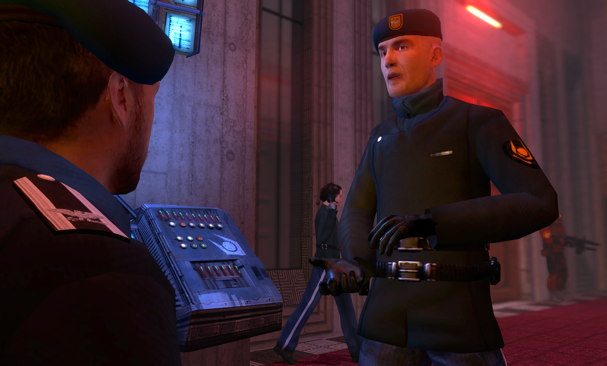

Ministério da Proteção Civil
O Ministério da Proteção Civil (ou MdPC) é o órgão governamental e de ligação da Proteção Civil. Ele é um dos ministérios do Conselho de Segurança da Cidade 11.
Geral
Formado como o principal meio de comunicação e criação de políticas em nome da Proteção Civil, o Ministério da Proteção Civil é um órgão governamental administrativo e estratégico. Os membros do Ministério emitem diretrizes administrativas e atualizações de políticas para a Proteção Civil de seus distritos; além disso, aconselham e coordenam com o Conselho de Segurança em assuntos relacionados à cidade. Os membros do Ministério permanecem em seus cargos até serem considerados inapto para a função.
Exceto por entregar comunicados e se comunicar esporadicamente com Líderes de Patente para transmitir informações, o Ministério da Proteção Civil não se envolve nos assuntos cotidianos da Proteção Civil, tampouco na execução de suas diretrizes. Essa responsabilidade é deixada para os Líderes de Patente.
Organização
O Ministério de Proteção Civil é composto por um Ministro e um Consultor de cada distrito.
- Os Consultores são os representantes de cada distrito da Cidade 11. Cada Consultor é responsável por seu distrito e reporta-se ao Ministro da Proteção Civil. Líderes de Patente com bom histórico podem ser promovidos a Consultores, caso o cargo esteja vago.
- O Ministro da Proteção Civil é um Consultor nomeado pelo Administrador da Cidade para supervisionar o Ministério da Proteção Civil. Além de continuar supervisionando seu distrito como Consultor, o Ministro assume a responsabilidade adicional pela gestão do departamento.
| MINISTÉRIO |
| Ministério da Proteção Civil |
|  |
| Um conselho de comandantes de cada distrito responsável por relatar e manter a integridade operacional da Proteção Civil em uma posição ministerial. |